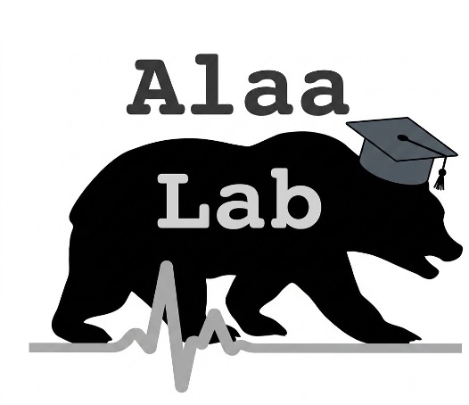

Publications
Peer-reviewed papers, preprints, and workshop contributions.
Show
Lab Member
Position: Deciphering the Functions of DNAs, RNAs, and Proteins Should Consider Multi-Modal Large Language Models
ICML 2026 · Spotlight
State-Space Modeling in Natural Language
ICLR Workshop on Time Series in the Age of Large Models · 2026
Advances in LLM Reasoning Enable Flexibility in Clinical Problem-Solving
arXiv preprint · 2026
Artificial Intelligence Surrogate Models to Predict Long-Term Cardiovascular Effects of Immune Checkpoint Inhibitor Therapies Using Electrocardiograms
Journal of Clinical Oncology · 2026 · Abstract
Machine Learning Cross-Platform Proteomic Imputation Enables Protein Quality Scoring and Replication of Epidemiological Associations
bioRxiv · 2026
Position: Medical Large Language Model Benchmarks Should Prioritize Construct Validity
ICML 2025 · Oral Presentation
Generative AI Enables Medical Image Segmentation in Ultra Low-Data Regimes
Nature Communications · 2025
A Longitudinal Analysis of Declining Medical Safety Messaging in Generative AI Models
npj Digital Medicine · 2025
Limitations of Large Language Models in Clinical Problem-Solving Arising from Inflexible Reasoning
Scientific Reports · 2025
BioAgents: Bridging the Gap in Bioinformatics Analysis with Multi-Agent Systems
Scientific Reports · 2025
Conformal Prediction Sets with Improved Conditional Coverage using Trust Scores
arXiv preprint · 2025
Data Reuse Enables Cost-Efficient Randomized Trials of Medical AI Models
arXiv preprint · 2025
Reliable Agent Engineering Should Integrate Machine-Compatible Organizational Principles
arXiv preprint · 2025
Norm Growth and Stability Challenges in Localized Sequential Knowledge Editing
AAAI Workshop on Knowledgeable Foundation Models · 2025
Physician-versus Large Language Model-Generated Summaries in the Emergency Department
medRxiv · 2025
Extracting TNFi Switching Reasons and Trajectories From Real-World Data Using Large Language Models
medRxiv · 2025
Med-Real2Sim: Non-Invasive Medical Digital Twins using Physics-Informed Self-Supervised Learning
NeurIPS · 2024
Pruning the Way to Reliable Policies: A Multi-Objective Deep Q-Learning Approach to Critical Care
IEEE Journal of Biomedical and Health Informatics · 2024
A Machine Learning Approach for Predicting Textbook Outcome After Cytoreductive Surgery and Hyperthermic Intraperitoneal Chemotherapy
World Journal of Surgery · 2024
Generating New Drug Repurposing Hypotheses Using Disease-Specific Hypergraphs
Pacific Symposium on Biocomputing · 2024
Dr-LLaVA: Visual Instruction Tuning with Symbolic Clinical Grounding
NeurIPS Workshop on Multimodal Algorithmic Reasoning · 2024
Large Language Models as Co-Pilots for Causal Inference in Medical Studies
arXiv preprint · 2024
Seq-to-Final: A Benchmark for Tuning from Sequential Distributions to a Final Time Point
arXiv preprint · 2024
EEG-GPT: Exploring Capabilities of Large Language Models for EEG Classification and Interpretation
arXiv preprint · 2024
Generation of Guideline-Based Clinical Decision Trees in Oncology Using Large Language Models
medRxiv · 2024
PREDICT Underestimates Survival of Patients with HER2-Positive Early-Stage Breast Cancer
npj Breast Cancer · 2023
External Validity of Machine Learning-Based Prognostic Scores for Cystic Fibrosis: A Retrospective Study Using the UK and Canadian Registries
PLOS Digital Health · 2023
Large-Scale Study of Temporal Shift in Health Insurance Claims
Conference on Health, Inference, and Learning (CHIL) · 2023
Generating Drug Repurposing Hypotheses through the Combination of Disease-Specific Hypergraphs
Machine Learning for Health (ML4H) · 2023
Estimating Uncertainty in Multimodal Foundation Models using Public Internet Data
NeurIPS Workshop on Robustness of Few-shot and Zero-shot Models · 2023
Identifying Splenic Radiomics Features Associated with Risk of Coronary Artery Disease
Circulation · 2023 · Abstract